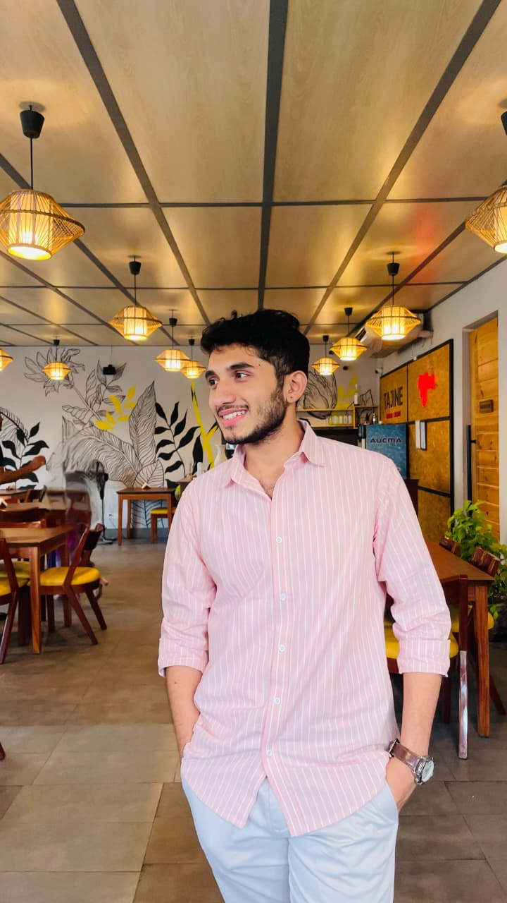
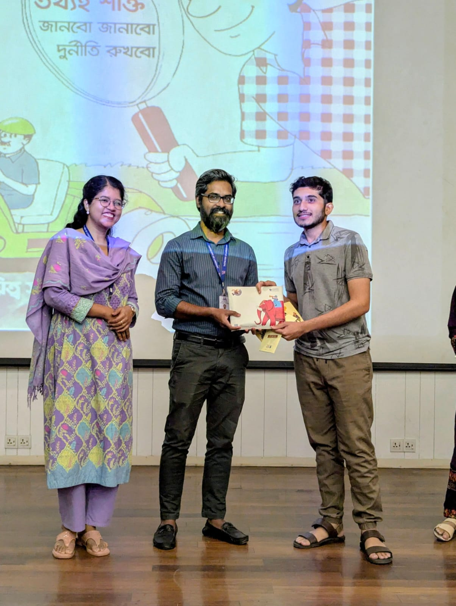

Computer Science & Engineering undergraduate at the University of Asia Pacific.

I'm a third-year, first-semester Computer Science and Engineering student at the University of Asia Pacific (UAP), currently based in Segunbagicha, Dhaka. What draws me to software isn't the finished product as much as the layer underneath it — how a program manages state, how a database keeps itself consistent, how a few good abstractions make a system easier to reason about.
My day-to-day work moves between C and C++ for foundational logic, Java for object-oriented application design, Python for quick scripting and problem solving, and relational databases for everything that needs to persist. I'd rather spend an extra hour getting the structure right than patch around a weak design later.
That habit of showing up and getting involved started early — during my school years at Katiadi Govt. High School, where I volunteered for events and worked alongside other students, and it's carried into how I approach group projects and coursework today.
The tools, languages, and paradigms I use to design and build software.
Practical implementations of database-driven and object-oriented systems.
A management system built to handle fuel inventory, dispensing, and transaction records, with a structured relational layer for accurate stock and sales tracking.
A pharmacy-management style system for organizing medicine records, stock levels, and transactions, designed around a clean relational schema for reliable data integrity.
Recognition, involvement, and the moments that shaped my academic journey.
Awarded the Vice-Chancellor's Award at the University of Asia Pacific in recognition of consistent academic performance and active contribution to campus initiatives.
Awarded merit scholarships in both SSC and HSC for outstanding academic results.
Active participant in university club activities and seminars, with several prizes won along the way.
Volunteered at Katiadi Govt. High School, assisting with event management, outreach, and science fairs — building early leadership and teamwork skills.

Interested in collaboration, internship opportunities, or discussing a project? Reach out any of these ways.